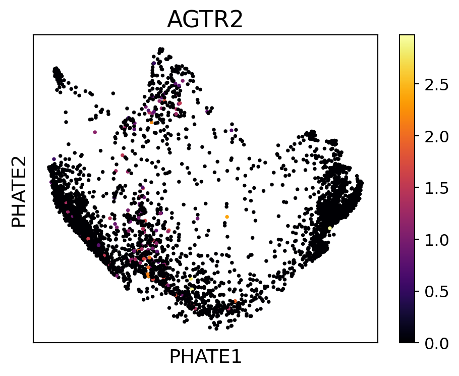
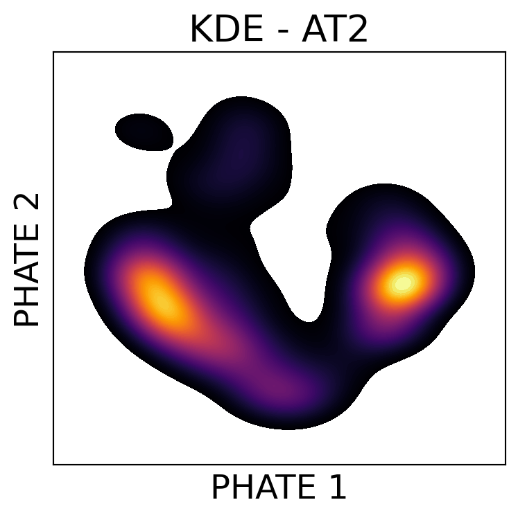
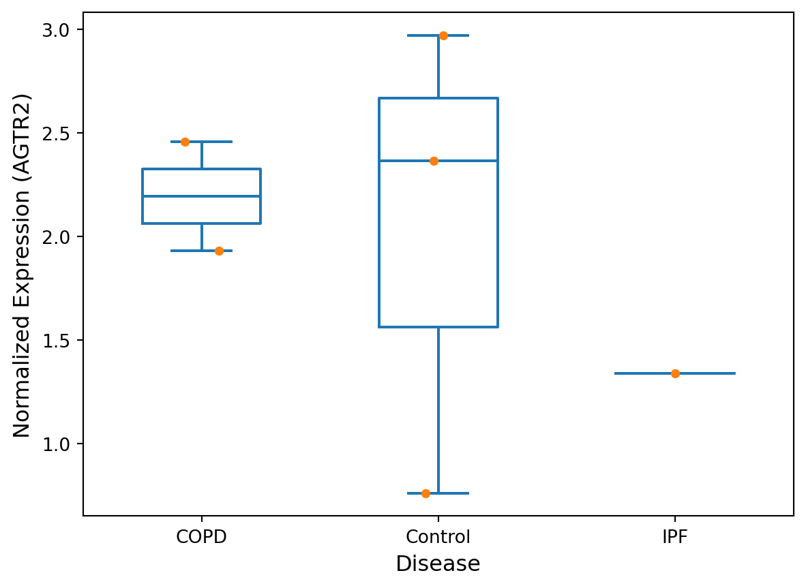

import numpy as np
import scanpy as sc
import pandas as pd
import polars as pl
import seaborn as sns
import matplotlib.pyplot as plt
from scipy.stats import f_oneway
import phate, scprep, session_info
from scipy.stats import mannwhitneyu, ttest_ind
from statsmodels.stats.multicomp import MultiComparisonDimensional reduction with PHATE: AT2 and COPD
1 Import libraries
%matplotlib inline
sc.settings.verbosity = 32 Load data
adata = sc.read_h5ad("../../_m/ipf_dataset.h5ad")
adataAnnData object with n_obs × n_vars = 312928 × 45947
obs: 'CellBarcode_Identity', 'nUMI', 'nGene', 'CellType_Category', 'Manuscript_Identity', 'Subclass_Cell_Identity', 'Disease_Identity', 'Subject_Identity', 'Library_Identity', 'cell_type', 'location', 'disease', 'patient', 'label'
var: 'Ensembl_GeneID', 'HGNC_EnsemblAlt_GeneID'
uns: 'X_name', 'study'2.0.1 Subset for AT2 cell type
adata.obs.cell_type.unique()['ncMonocyte', 'Macrophage_Alveolar', 'NK', 'cMonocyte', 'Lymphatic', ..., 'VE_Peribronchial', 'Pericyte', 'Aberrant_Basaloid', 'Ionocyte', 'PNEC']
Length: 39
Categories (39, object): ['ATI', 'ATII', 'Aberrant_Basaloid', 'B', ..., 'cDC2', 'cMonocyte', 'ncMonocyte', 'pDC']new_adata = adata[adata.obs["cell_type"] == "ATII"]
new_adataView of AnnData object with n_obs × n_vars = 3961 × 45947
obs: 'CellBarcode_Identity', 'nUMI', 'nGene', 'CellType_Category', 'Manuscript_Identity', 'Subclass_Cell_Identity', 'Disease_Identity', 'Subject_Identity', 'Library_Identity', 'cell_type', 'location', 'disease', 'patient', 'label'
var: 'Ensembl_GeneID', 'HGNC_EnsemblAlt_GeneID'
uns: 'X_name', 'study'2.0.2 Convert to counts matrix
ipf_counts = pd.DataFrame(new_adata.X.toarray(),
columns=[new_adata.var.index],
index=new_adata.obs.index)
print(ipf_counts.shape)
ipf_counts.head(2)(3961, 45947)| TSPAN6 | TNMD | DPM1 | SCYL3 | C1orf112 | FGR | CFH | FUCA2 | GCLC | NFYA | ... | LINC02379 | HIGD1AP6 | ENSG00000255486 | ENSG00000221498 | RNU6-648P | ENSG00000227029 | RN7SL782P | ENSG00000274532 | ENSG00000277705 | ENSG00000280139 | |
|---|---|---|---|---|---|---|---|---|---|---|---|---|---|---|---|---|---|---|---|---|---|
| 001C_ACACCCTCATTGTGCA | 0.0 | 0.0 | 0.0 | 0.0 | 0.0 | 0.0 | 0.0 | 0.0 | 0.0 | 0.0 | ... | 0.0 | 0.0 | 0.0 | 0.0 | 0.0 | 0.0 | 0.0 | 0.0 | 0.0 | 0.0 |
| 001C_AGGGAGTGTTGTGGAG | 0.0 | 0.0 | 0.0 | 0.0 | 0.0 | 0.0 | 0.0 | 0.0 | 0.0 | 0.0 | ... | 0.0 | 0.0 | 0.0 | 0.0 | 0.0 | 0.0 | 0.0 | 0.0 | 0.0 | 0.0 |
2 rows × 45947 columns
scprep.plot.plot_library_size(ipf_counts)/users/jbenjami/.local/lib/python3.9/site-packages/scprep/plot/utils.py:104: UserWarning:
Matplotlib is currently using module://matplotlib_inline.backend_inline, which is a non-GUI backend, so cannot show the figure.
3 Preprocessing: Filtering, Normalizing, and Transforming
3.1 Filtering
ipf_counts = scprep.filter.filter_rare_genes(ipf_counts, min_cells=6)
ipf_counts.shape(3961, 25358)3.2 Normalization
ipf_counts = scprep.normalize.library_size_normalize(ipf_counts)
ipf_counts.head(2)| TSPAN6 | DPM1 | SCYL3 | C1orf112 | FGR | CFH | FUCA2 | GCLC | NFYA | STPG1 | ... | RAB5CP2 | SLC5A4P1 | LINC02038 | ENSG00000199473 | H1FNT | USP17L13 | USP17L10 | USP17L19 | USP17L16P | USP17L9P | |
|---|---|---|---|---|---|---|---|---|---|---|---|---|---|---|---|---|---|---|---|---|---|
| 001C_ACACCCTCATTGTGCA | 0.0 | 0.0 | 0.0 | 0.0 | 0.0 | 0.0 | 0.0 | 0.0 | 0.0 | 0.0 | ... | 0.0 | 0.0 | 0.0 | 0.0 | 0.0 | 0.0 | 0.0 | 0.0 | 0.0 | 0.0 |
| 001C_AGGGAGTGTTGTGGAG | 0.0 | 0.0 | 0.0 | 0.0 | 0.0 | 0.0 | 0.0 | 0.0 | 0.0 | 0.0 | ... | 0.0 | 0.0 | 0.0 | 0.0 | 0.0 | 0.0 | 0.0 | 0.0 | 0.0 | 0.0 |
2 rows × 25358 columns
3.3 Transformation
ipf_counts = scprep.transform.sqrt(ipf_counts)4 PHATE
phate_operator = phate.PHATE(n_jobs=-2, random_state=13)
Y_phate = phate_operator.fit_transform(ipf_counts)Calculating PHATE...
Running PHATE on 3961 observations and 25358 variables.
Calculating graph and diffusion operator...
Calculating PCA...
Calculated PCA in 38.60 seconds.
Calculating KNN search...
Calculated KNN search in 3.27 seconds.
Calculating affinities...
Calculated affinities in 0.14 seconds.
Calculated graph and diffusion operator in 42.45 seconds.
Calculating landmark operator...
Calculating SVD...
Calculated SVD in 0.76 seconds.
Calculating KMeans...
Calculated KMeans in 16.14 seconds.
Calculated landmark operator in 19.90 seconds.
Calculating optimal t...
Automatically selected t = 29
Calculated optimal t in 9.99 seconds.
Calculating diffusion potential...
Calculated diffusion potential in 7.53 seconds.
Calculating metric MDS...
Calculated metric MDS in 14.97 seconds.
Calculated PHATE in 94.90 seconds.scprep.plot.scatter2d(Y_phate, ticks=None, label_prefix="PHATE", figsize=(5,5),
filename="at2_phate_clustering.pdf", dpi=300)/users/jbenjami/.local/lib/python3.9/site-packages/scprep/plot/utils.py:104: UserWarning:
Matplotlib is currently using module://matplotlib_inline.backend_inline, which is a non-GUI backend, so cannot show the figure.
5 Plotting
5.1 Angiotensin II receptor 2 (AGTR2)
# Plotting mitochondrial expression
fig, ax = plt.subplots(1, figsize=(5,4))
scprep.plot.scatter2d(Y_phate, ax=ax, c=ipf_counts['AGTR2'],
title='AGTR2', ticks=False, label_prefix='PHATE',
filename="at2_phate_clustering.AGTR2.pdf", dpi=300)
fig.tight_layout()
5.2 KDE plot of pericytes
fig, ax = plt.subplots(1, figsize=(4,4))
kde_plot = sns.kdeplot(x=Y_phate[:, 0], y=Y_phate[:, 1], fill=True, ax=ax, zorder=0,
n_levels=100, cmap="inferno")
ax.set_xticks([]); ax.set_yticks([])
ax.set_xlabel('PHATE 1', fontsize=18); ax.set_ylabel('PHATE 2', fontsize=18)
ax.set_title('KDE - AT2', fontsize=20)
fig.tight_layout()
fig = kde_plot.get_figure()
fig.savefig("at2_phate_kde.pdf") 
5.3 Clustering data using PHATE
clusters = phate.cluster.kmeans(phate_operator, k=2)
scprep.plot.scatter2d(Y_phate, c=clusters, s=1,figsize=(4.3,4), ticks=None, label_prefix='PHATE',
legend_anchor=(1,1), fontsize=12, title='PHATE clusters',
filename="at2_phate_clustering.kmeans.pdf", dpi=300)
fig.tight_layout()/users/jbenjami/.local/lib/python3.9/site-packages/phate/cluster.py:57: FutureWarning:
k is deprecated. Please use n_clusters in future.
/users/jbenjami/.local/lib/python3.9/site-packages/scprep/plot/utils.py:104: UserWarning:
Matplotlib is currently using module://matplotlib_inline.backend_inline, which is a non-GUI backend, so cannot show the figure.
6 Comparison of PHATE clusters and AGTR2 expressoin
6.1 Subset data
gene_list = []
for item in ipf_counts.columns:
gene_list.append(str(item).replace("('", "").replace("',)", ""))
new_adata = new_adata[ipf_counts.index, new_adata.var.index.isin(gene_list)]
new_adata.obsm["X_phate"] = Y_phate
new_adata.obs["phate_clusters"] = ["Group_"+str(clu) for clu in clusters]
new_adata/tmp/ipykernel_4005062/2896849848.py:6: ImplicitModificationWarning:
Setting element `.obsm['X_phate']` of view, initializing view as actual.
AnnData object with n_obs × n_vars = 3961 × 25358
obs: 'CellBarcode_Identity', 'nUMI', 'nGene', 'CellType_Category', 'Manuscript_Identity', 'Subclass_Cell_Identity', 'Disease_Identity', 'Subject_Identity', 'Library_Identity', 'cell_type', 'location', 'disease', 'patient', 'label', 'phate_clusters'
var: 'Ensembl_GeneID', 'HGNC_EnsemblAlt_GeneID'
uns: 'X_name', 'study'
obsm: 'X_phate'6.2 Qualitative review
ipf_counts.loc[:, "PHATE"] = clusters
ipf_counts.loc[:, "patient"] = new_adata.obs["patient"]
ipf_counts.loc[:, "disease"] = new_adata.obs["disease"]
df = pl.from_pandas(ipf_counts.loc[:, ["AGTR2", "PHATE", "patient", "disease"]])\
.rename({"('AGTR2',)": "AGTR2", "('PHATE',)": "PHATE",
"('patient',)": "patient", "('disease',)": "disease"})
df.head()
shape: (5, 4)
| AGTR2 | PHATE | patient | disease |
|---|---|---|---|
| f64 | i32 | cat | cat |
| 0.0 | 1 | "001C" | "Control" |
| 0.0 | 1 | "001C" | "Control" |
| 0.0 | 1 | "001C" | "Control" |
| 0.0 | 1 | "001C" | "Control" |
| 0.0 | 1 | "001C" | "Control" |
df.write_csv("at2_phate.normalized_expression.tsv", separator="\t")df.filter(pl.col("AGTR2") > 0)\
.group_by(["PHATE", "patient", "disease"])\
.agg([pl.sum("AGTR2").name.suffix("_sum"),
pl.mean("AGTR2").name.suffix("_mean"),
pl.count("AGTR2").name.suffix("_count"),
pl.std("AGTR2").name.suffix("_std")])\
.sort("PHATE")
shape: (30, 7)
| PHATE | patient | disease | AGTR2_sum | AGTR2_mean | AGTR2_count | AGTR2_std |
|---|---|---|---|---|---|---|
| i32 | cat | cat | f64 | f64 | u32 | f64 |
| 0 | "003C" | "Control" | 0.77791 | 0.77791 | 1 | null |
| 0 | "010I" | "IPF" | 2.248464 | 1.124232 | 2 | 0.296049 |
| 0 | "052CO" | "COPD" | 16.213452 | 1.247189 | 13 | 0.430442 |
| 0 | "063I" | "IPF" | 1.999001 | 1.999001 | 1 | null |
| 0 | "098C" | "Control" | 3.233417 | 1.077806 | 3 | 0.186578 |
| 0 | "133C" | "Control" | 29.634272 | 1.097566 | 27 | 0.319397 |
| 0 | "152CO" | "COPD" | 12.52984 | 1.56623 | 8 | 0.317935 |
| 0 | "153CO" | "COPD" | 2.944575 | 2.944575 | 1 | null |
| 0 | "177I" | "IPF" | 1.215631 | 1.215631 | 1 | null |
| 0 | "184CO" | "COPD" | 1.144446 | 1.144446 | 1 | null |
| 0 | "226C" | "Control" | 20.309202 | 1.128289 | 18 | 0.424496 |
| 0 | "465C" | "Control" | 2.914045 | 1.457023 | 2 | 0.84473 |
| … | … | … | … | … | … | … |
| 0 | "193CO" | "COPD" | 3.093311 | 1.546655 | 2 | 0.068019 |
| 0 | "217CO" | "COPD" | 2.865293 | 1.432647 | 2 | 0.177462 |
| 0 | "218C" | "Control" | 2.840214 | 1.420107 | 2 | 0.543909 |
| 0 | "235CO" | "COPD" | 4.457729 | 1.114432 | 4 | 0.214635 |
| 0 | "237CO" | "COPD" | 2.797636 | 2.797636 | 1 | null |
| 0 | "8CO" | "COPD" | 1.857471 | 0.928735 | 2 | 0.450254 |
| 1 | "010I" | "IPF" | 1.336545 | 1.336545 | 1 | null |
| 1 | "1372C" | "Control" | 2.366905 | 2.366905 | 1 | null |
| 1 | "218C" | "Control" | 0.758578 | 0.758578 | 1 | null |
| 1 | "052CO" | "COPD" | 1.930229 | 1.930229 | 1 | null |
| 1 | "098C" | "Control" | 2.972191 | 2.972191 | 1 | null |
| 1 | "235CO" | "COPD" | 2.458108 | 2.458108 | 1 | null |
df.filter(pl.col("AGTR2") > 0)\
.group_by(["PHATE", "disease"])\
.agg([pl.sum("AGTR2").name.suffix("_sum"),
pl.mean("AGTR2").name.suffix("_mean"),
pl.count("AGTR2").name.suffix("_count"),
pl.std("AGTR2").name.suffix("_std")])\
.sort("PHATE")
shape: (6, 6)
| PHATE | disease | AGTR2_sum | AGTR2_mean | AGTR2_count | AGTR2_std |
|---|---|---|---|---|---|
| i32 | cat | f64 | f64 | u32 | f64 |
| 0 | "IPF" | 24.491344 | 1.289018 | 19 | 0.449634 |
| 0 | "COPD" | 47.903753 | 1.408934 | 34 | 0.523677 |
| 0 | "Control" | 89.711193 | 1.107546 | 81 | 0.356819 |
| 1 | "IPF" | 1.336545 | 1.336545 | 1 | null |
| 1 | "Control" | 6.097675 | 2.032558 | 3 | 1.144055 |
| 1 | "COPD" | 4.388337 | 2.194168 | 2 | 0.373267 |
dx = df.filter(pl.col("PHATE") == 1, pl.col("AGTR2") > 0).group_by(["patient", "disease"]).agg(pl.mean("AGTR2"))
dx.head(2)
shape: (2, 3)
| patient | disease | AGTR2 |
|---|---|---|
| cat | cat | f64 |
| "010I" | "IPF" | 1.336545 |
| "052CO" | "COPD" | 1.930229 |
ax = sns.boxplot(data=dx, x="disease", y="AGTR2", fill=False, width=0.5)
box_plot = sns.stripplot(data=dx, x="disease", y="AGTR2", ax=ax)
ax.set_xlabel('Disease', fontsize=12);
ax.set_ylabel('Normalized Expression (AGTR2)', fontsize=12)
fig.tight_layout()
fig = box_plot.get_figure()
fig.savefig("at2_phate.PHATE_cluster_1.boxplot_AGTR2.pdf") 
6.3 Statistical comparison
6.3.1 One-way ANOVA
c0 = dx.filter(pl.col("disease") == "Control").to_pandas().AGTR2.values
c1 = dx.filter(pl.col("disease") == "COPD").to_pandas().AGTR2.values
c2 = dx.filter(pl.col("disease") == "IPF").to_pandas().AGTR2.values
f_oneway(c0, c1, c2)F_onewayResult(statistic=0.27937860330302505, pvalue=0.773988205432517)6.3.2 TukeyHSD
model = MultiComparison(dx.to_pandas().AGTR2, dx.to_pandas().disease)
res_mod = model.tukeyhsd()
print(res_mod) Multiple Comparison of Means - Tukey HSD, FWER=0.05
=====================================================
group1 group2 meandiff p-adj lower upper reject
-----------------------------------------------------
COPD Control -0.1616 0.9815 -3.8185 3.4953 False
COPD IPF -0.8576 0.7647 -5.7639 4.0486 False
Control IPF -0.696 0.816 -5.3217 3.9297 False
-----------------------------------------------------6.3.3 T-test (two-sided)
ttest_ind(c0, c1) # Control VS COPDTtest_indResult(statistic=-0.1846704770781784, pvalue=0.8652661565736242)ttest_ind(c0, c2) # Control VS IPF/users/jbenjami/.local/lib/python3.9/site-packages/numpy/core/fromnumeric.py:3747: RuntimeWarning:
Degrees of freedom <= 0 for slice
/users/jbenjami/.local/lib/python3.9/site-packages/numpy/core/_methods.py:261: RuntimeWarning:
invalid value encountered in scalar divide
Ttest_indResult(statistic=nan, pvalue=nan)ttest_ind(c1, c2) # COPD VS IPFTtest_indResult(statistic=nan, pvalue=nan)6.3.4 Mann-Whitney U
6.3.4.1 Two-sided test
mannwhitneyu(c0, c1) # Control VS COPDMannwhitneyuResult(statistic=3.0, pvalue=1.0)mannwhitneyu(c0, c2) # Control VS IPFMannwhitneyuResult(statistic=2.0, pvalue=1.0)mannwhitneyu(c1, c2) # COPD VS IPFMannwhitneyuResult(statistic=2.0, pvalue=0.6666666666666666)6.3.4.2 One-sided test
mannwhitneyu(c0, c1, alternative="less") # Control VS COPDMannwhitneyuResult(statistic=3.0, pvalue=0.6000000000000001)mannwhitneyu(c0, c2, alternative="less") # Control VS IPFMannwhitneyuResult(statistic=2.0, pvalue=0.75)mannwhitneyu(c1, c2, alternative="greater") # COPD VS IPFMannwhitneyuResult(statistic=2.0, pvalue=0.3333333333333333)7 Session information
session_info.show()Click to view session information
----- anndata 0.10.5.post1 matplotlib 3.7.1 numpy 1.24.4 pandas 2.0.3 phate 1.0.11 polars 0.19.12 scanpy 1.9.8 scipy 1.8.1 scprep 1.2.3 seaborn 0.13.2 session_info 1.0.0 statsmodels 0.14.0 -----
Click to view modules imported as dependencies
PIL 8.2.0 anyio NA argcomplete NA arrow 1.2.3 asttokens NA attr 23.2.0 attrs 23.2.0 babel 2.10.3 backcall 0.2.0 beta_ufunc NA binom_ufunc NA cairo 1.20.1 certifi 2024.02.02 cffi 1.14.5 chardet 4.0.0 charset_normalizer 3.3.2 cloudpickle 2.1.0 comm 0.2.2 contourpy 1.1.0 cycler 0.10.0 cython_runtime NA dask 2022.8.1 dateutil 2.8.2 debugpy 1.6.3 decorator 5.1.1 deprecated 1.2.13 exceptiongroup 1.2.0 executing 0.10.0 fastjsonschema NA fontTools 4.33.3 fqdn NA fsspec 2022.7.1 future 0.18.2 gi 3.40.1 gio NA glib NA gobject NA graphtools 1.5.3 gtk NA h5py 3.7.0 hypergeom_ufunc NA idna 2.10 igraph 0.10.4 importlib_metadata NA importlib_resources NA ipykernel 6.15.1 ipywidgets 8.1.2 isoduration NA jedi 0.19.1 jinja2 3.1.1 joblib 1.2.0 json5 NA jsonpointer 2.3 jsonschema 4.21.1 jsonschema_specifications NA jupyter_events 0.10.0 jupyter_server 2.13.0 jupyterlab_server 2.25.4 kaleido 0.2.1 kiwisolver 1.4.3 leidenalg 0.9.1 llvmlite 0.42.0 louvain 0.8.1 lxml 4.9.1 markupsafe 2.1.1 matplotlib_inline 0.1.6 mpl_toolkits NA natsort 8.2.0 nbformat 5.4.0 nbinom_ufunc NA netifaces 0.10.6 numba 0.59.0 opt_einsum v3.3.0 overrides NA packaging 21.3 parso 0.8.3 patsy 0.5.2 pexpect 4.8.0 pickleshare 0.7.5 pkg_resources NA platformdirs 3.8.0 plotly 5.9.0 ply 3.11 prometheus_client NA prompt_toolkit 3.0.30 psutil 5.9.1 ptyprocess 0.7.0 pure_eval 0.2.2 pyarrow 15.0.0 pycparser 2.20 pydev_ipython NA pydevconsole NA pydevd 2.8.0 pydevd_file_utils NA pydevd_plugins NA pydevd_tracing NA pygments 2.13.0 pygsp 0.5.1 pyparsing 3.0.9 pythonjsonlogger NA pytz 2022.1 referencing NA requests 2.31.0 rfc3339_validator 0.1.4 rfc3986_validator 0.1.1 rpds NA s_gd2 1.8.1 send2trash NA six 1.16.0 sklearn 1.4.1.post1 sniffio 1.2.0 socks 1.7.1 stack_data 0.4.0 swig_runtime_data4 NA tasklogger 1.2.0 tenacity NA texttable 1.6.7 threadpoolctl 3.1.0 tlz 0.12.0 toolz 0.12.0 torch 1.13.1+cu117 tornado 6.2 tqdm 4.64.0 traitlets 5.9.0 typing_extensions NA uri_template NA urllib3 1.26.5 wcwidth 0.2.5 webcolors 1.11.1 websocket 1.4.0 wrapt 1.16.0 yaml 6.0 zipp NA zmq 25.0.0 zoneinfo NA zstandard 0.18.0
----- IPython 8.4.0 jupyter_client 8.0.2 jupyter_core 5.2.0 jupyterlab 4.1.5 notebook 7.1.2 ----- Python 3.9.16 (main, Dec 8 2022, 00:00:00) [GCC 11.3.1 20221121 (Red Hat 11.3.1-4)] Linux-5.14.0-284.11.1.el9_2.x86_64-x86_64-with-glibc2.34 ----- Session information updated at 2024-05-16 10:23